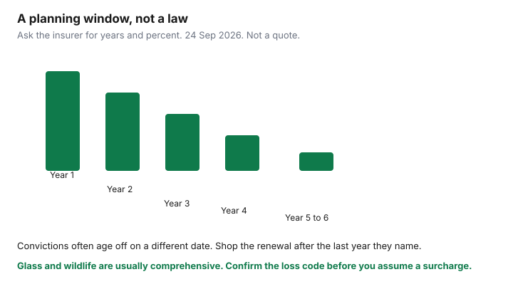

Insurance · Canada
How Long an Auto Claim Hits Your Canadian Premium: At-Fault, Not-at-Fault, and Glass
A small claim feels finished when the body shop is paid. The premium remembers it on later renewals, for as many years as that insurer’s filing says, stacked with convictions. There is no national statute that says “six years” or “three years.” There is a planning window, and there is a question you can force into writing before you open a claim. This page is that question, split by at-fault, not-at-fault, and glass, with the provincial shape of direct compensation property damage. It does not redo broker shopping, telematics, or the deductible method. Those Transportation guides are linked.
Disclosure: This page is education. It does not steer you to a claims-repair loan or any other credit product. Broker quote flows are an offer type only if you re-shop after you know the surcharge schedule. We do not claim an insurer or brokerage partnership. Illustrations are not quotes. Rules read 24 Sep 2026.
Key takeaways
- At-fault, not-at-fault, and direct compensation property damage are different ideas. DCPD pays your car to the extent you were not at fault. It is not a finding that you caused the crash.
- Private insurers file their own surcharge schedules. Ask how many years an at-fault claim, a not-at-fault claim, a glass claim, and a conviction stay on the rating. Do not treat a forum’s “six years” as law.
- A repair only a little above the deductible can cost more in later premiums than paying it yourself. Run the labelled arithmetic before you call, when the car is safe and the other driver is not in dispute.
- Glass and wildlife claims are usually comprehensive, not at-fault collisions. They are often cleaner. They are not automatically free. Ask whether a claims-free discount still dies.
- Get the fault rule in writing. In Ontario the charts are the Fault Determination Rules. Complain through the insurer’s ombudsman, then the General Insurance OmbudService where it applies, and the provincial regulator for conduct.
Define at-fault vs not-at-fault vs direct compensation property damage by province type
Three phrases get used as if they were one. They change both the cheque and the renewal.
| Idea | Private-market provinces (Ontario, Alberta, Atlantic, territories) | Public systems |
|---|---|---|
| At-fault | Your driving caused or contributed, under that province’s fault rules. Ontario uses the Fault Determination Rules, a chart regulation, for many common crashes. The percent at fault drives your DCPD recovery and, usually, your surcharge. | Québec: bodily injury is the SAAQ no-fault plan; the private insurer still cares who damaged the vehicles. B.C.: ICBC’s Basic insurance and Enhanced Care are not an Ontario DCPD policy. Manitoba and Saskatchewan use the public insurer’s driver-safety scale. Use the ICBC and SAAQ guides for those products. |
| Not-at-fault | The other driver is responsible under those rules. You should not wear an at-fault surcharge for a crash the rules call 0% yours. Some insurers still look at not-at-fault frequency. Ask. | A not-at-fault vehicle claim may still be on the public insurer’s record. Ask which scale it touches. Do not assume an Ontario “0% means no renewal impact” sentence applies at ICBC or MPI. |
| Direct compensation — property damage | In Ontario and other DCPD provinces, you claim vehicle damage from your own insurer to the extent you are not at fault, when the other vehicle is insured by a participating insurer and the crash is in the province. It is a billing path. | Québec’s private policy is the damage contract. B.C., Manitoba, and Saskatchewan do not use Ontario’s OPCF 49 opt-out. Ontario’s opt-out is explained on the accident-benefits page so it is not confused with injury cover. Opting out does not make a crash not-at-fault. It makes the vehicle damage unpaid. |
Injury benefits are a separate claim. In Ontario they are accident benefits, now partly optional. Opening a vehicle claim and opening an injury claim are two files. Do not skip care because you are worried about the premium. The premium question in the next section is about property damage you could pay from cash, not about an injury.
Typical surcharge windows insurers use and how they stack with convictions
Ask the insurer, before you need them, for the rating rules on four events: an at-fault collision, a not-at-fault or DCPD collision, a comprehensive claim including glass, and a minor conviction. You want years and percentages, or you want them to say the quote system will not show it. Write down the name of the person and the date.
What households actually hear, and what you should not promote to the status of law:
- Many private-market filings surcharge an at-fault accident for several years, sometimes described as a step-down over about three to six years. The H2 on this page uses that planning range because it is the range people budget. The binding range is the one on your filing.
- Minor convictions are often rated for a shorter period than an at-fault crash, commonly discussed as about three years. Again, the filing controls. A major conviction or a suspension is a different and longer problem, and it can push a driver out of the standard market.
- The two stack. An at-fault claim plus a ticket is not “the worse of the two.” It is both, if both are inside the years that insurer uses.
- A claims-free discount can end even when there is no formal surcharge. Losing 5 or 10 or some other filed percent is still a multi-year cost. Ask which line moved.

Public insurers publish driver-safety or experience scales instead of an Ontario surcharge letter. Those scales are the document. Do not paste a private-market six-year story onto an ICBC driver factor.
When a small claim costs more in future premiums than paying out of pocket
When the damage is yours, nobody is injured, and fault is not a fight, compare the insurer’s cheque with the later premium. This sketch uses round numbers so the method is visible. Substitute your deductible, your premium, and the years you were given.
| Choice | Cash this month | Later premium, in this sketch |
|---|---|---|
| Pay the shop | $900 repair, no claim. | Premium stays on its old path. You keep whatever claims-free discount the insurer requires a clean year to keep. |
| Claim it | $500 deductible. The insurer pays the other $400. | If an at-fault surcharge is 15% in year one, 10% in year two, and 5% in year three on a $2,000 premium, the extra premium is $300 + $200 + $100 = $600, before a lost discount. You paid a $500 deductible to save $400 of repair and then spent $600. |
The method: (repair − deductible) versus (extra premium over the years they named + any lost discount). If the left side is smaller, paying the shop is the cheaper risk, provided you are not hiding a claim the contract requires you to report. Some policies require you to report incidents even if you do not claim. Ask that question too. A report that is not a payment can still be on a database the next insurer buys. If the other driver is involved, fault is disputed, or anyone is hurt, this arithmetic is the wrong tool. Open the claim.
Raising a deductible for next year is a different lever, covered on the deductible and mileage guide. Do it only with cash you can pay. Do not raise it the week after a loss to pretend the loss did not happen.
Glass, wildlife, and comprehensive claims: which ones usually stay cleaner
Comprehensive claims are not collision claims. Glass, theft, vandalism, fire, and a hit animal are the usual comprehensive list. They do not use the at-fault charts, because there is no other driver to chart.
- A windshield often has a lower deductible than collision, sometimes a separate glass deductible, sometimes a waiver for the first repair. Some insurers do not surcharge a single glass claim and still remove a claims-free discount after a second one. Ask before you book the glass company that bills the insurer automatically.
- Wildlife (a deer, a moose) is typically comprehensive. It should not be coded as an at-fault collision. Check the loss code on the acknowledgement. A wrong code is how a “clean” claim becomes a surcharge. Comprehensive can still count toward a frequency rule.
- A parking-lot door ding with no known driver may be collision, not comprehensive, and may be charged as at-fault if you cannot identify the other vehicle. That is a painful surprise. Photograph and ask which coverage and which fault percent they will use before you authorize a repair above the threshold in the previous section.
- A not-at-fault DCPD repair should not be an at-fault surcharge. Confirm the percent. Zero percent at fault is the result you want on the file if the chart says zero.
None of these is “usually free.” Usually cleaner means you ask one question and often keep the at-fault surcharge off. The claims-free discount is the follow-up question.
Document the adjuster’s fault decision and dispute pathways (ombuds / regulator)
If you disagree with the percent, the file needs a rule, not a mood.
- Ask the adjuster which rule produced the percent. In Ontario, ask which section of the Fault Determination Rules applies to the diagram. In Alberta and the Atlantic provinces, ask for the fault chart or case rule they used. In Québec, ask how the private insurer assigned fault for the vehicle, separate from SAAQ injury benefits.
- Send a short written account, photos, and any witness or dashcam note. Keep copies. The percent can move when the diagram was wrong: lanes, signals, who was ahead.
- Use the insurer’s internal complaint path and ask for the final position in writing. Many Canadian insurers are members of the General Insurance OmbudService. GIO is a dispute path after the insurer’s own process, not a shortcut around it, and it does not bind every insurer or every issue. Check that your company participates.
- Conduct complaints go to the provincial regulator. In Ontario that is FSRA. Alberta, the Atlantic provinces, Québec’s AMF, and the public insurers have their own complaint desks. A regulator is not a body shop and will not rewrite a fair fault percent because the premium hurts. They will look at process, misrepresentation, and whether you were given the rule.
- Injury claims have a separate dispute path, including Ontario’s Licence Appeal Tribunal for accident benefits. Do not send a vehicle-damage argument to the tribunal and hope. Use the path that matches the benefit.
Time limits for suing or for claiming accident benefits are short. If injuries are serious, talk to a lawyer about limitation periods. This page is not that advice. It is the paper trail for the fault percent that will sit on the renewal.
Plan the 3–6 year recovery: shopping cadence after a claim clears
Treat the three-to-six-year phrase as a calendar you fill in with the insurer’s real years, then shop on purpose.
- Year of the claim. Do not shop in a panic the week of the repair unless the insurer is non-renewing you. A mid-term cancellation can cost more than a surcharge. Fix the fault code first if it is wrong.
- Each renewal inside the window. Ask what percent is still applied and when it steps down. Correct kilometres and drivers at the same time, using the annual review. A stale commute on top of a surcharge is two problems.
- The renewal after the last surcharge year. This is the one to take to a second market. The broker-versus-direct guide is the method: same liability, same accident benefits, same deductibles. Some insurers weigh an old claim less, or not at all, once it is outside their window. You only see that on a quote.
- A not-at-fault claim that one insurer still prices. Another insurer may ignore it. That single difference is a reason to shop, not a reason to accept “all companies do this.”
- Convictions ageing off on a different date than the claim. Put both dates on the sheet. Shopping the month after the ticket drops, while the claim remains, is still worth a quote. Shopping the month after both are gone is the cleaner comparison.
Keep the claims-history letter or the renewal breakdown. The next application will ask about claims. Answering from memory, and missing a glass claim, is a misrepresentation problem you can avoid with one page in the same folder as the policy.
Sources & date stamps
- Insurance Bureau of Canada, mandatory auto insurance requirements — private provinces versus ICBC, MPI, SGI, and SAAQ. Used 24 Sep 2026.
- FSRA, auto insurance for consumers — Ontario complaint context and policy basics. Used 24 Sep 2026.
- Ontario Fault Determination Rules (a regulation under the Insurance Act) assign percentages for many crash diagrams. Confirm the section the adjuster cites. OPCF 49 DCPD opt-out is a separate 2024 choice, covered on the accident-benefits guide.
- Surcharge years are insurer filings. The three-to-six-year bars on the chart are a labelled planning sketch, not a statute and not an industry average.
Frequently asked questions
How many years does an at-fault claim affect my premium?
There is no national number. Private insurers file their own schedules, often discussed as a step-down over about three to six years. Convictions are often shorter. Ask your insurer for the years and the percent, and plan the re-shop for the renewal after those years.
Does a not-at-fault accident raise my rate?
It should not be surcharged as at-fault. Some insurers still count not-at-fault frequency or remove a claims-free discount. Direct compensation property damage is how you claim the car in Ontario when you are not at fault. It is not a fault finding. Ask whether that claim is on the rating.
Will a windshield claim raise my premium?
Glass is usually comprehensive, not an at-fault collision. Many insurers treat a single glass claim more gently than a crash, and some still affect a claims-free discount. Ask before the glass company bills the insurer.
How do I dispute fault in Ontario?
Ask which section of the Fault Determination Rules was applied. Use the insurer’s complaint process, then the General Insurance OmbudService if the company participates. FSRA handles conduct complaints. Injury benefits have their own tribunal path.
Is this insurance advice?
No. Education only. We do not claim a partnership with any insurer, and this page does not recommend a loan to pay a repair.